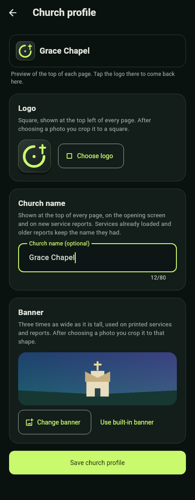

Open Settings › Church profile, or tap the logo or mark at the top left of any page. A preview of the page header sits at the top, then three sections and one Save church profile button.


| Section | What to do |
|---|---|
| Logo | Choose logo, then crop it to a square: drag to move, pinch to zoom, then Use logo. It replaces the built-in mark at the top left of every page. Use built-in mark puts the original back. The home-screen app icon is unchanged. |
| Church name | Shown at the top of every page, on the opening screen and on new service reports. Services already loaded and older reports keep the name they had. |
| Banner | Choose banner, then crop it to its 3:1 shape (three times as wide as it is tall), so you choose which part of the photo shows. It is used on printed services and reports. Use built-in banner is always available. |
Choose a JPEG, PNG or WebP photo up to 5 MB and 40 megapixels. The app saves exactly what is inside the crop frame, and a transparent background stays transparent. Keep essential details away from the edges. The logo and banner are included in backups.
Appearance offers thirteen preset themes and Create custom theme: Midnight Lime, Royal Navy, Warm Ivory, Deep Plum, Slate Teal, Morning Sky, Sage Linen, Ocean Deep, Cobalt Night, Graphite (clean white, for dark booths), Paper & Ink (near-black ink, for well-lit rooms), Paper & Ink (blue) (ink-blue buttons) and Meadow. Preview the choice, then Save appearance; Cancel or Back discards the preview. Test readability in the actual room, including overtime and warning labels. A beautiful palette is not useful if the operator cannot distinguish a warning at a glance.

The Layout & accessibility tab sets the Desktop layout (Tablet layout on a 10-inch or larger tablet; a phone has neither), Show keyboard keys on buttons and Saved looks (all three are described in Run the service from a PC), then Layout density (Compact, Comfortable, Spacious or Automatic, the default), High contrast, Reduced motion and the divider style. With Reduced motion on, a cue that slides in simply appears, and Screen flash gives the screen a coloured edge instead of a flash. On a PC or a large tablet, Settings › Desktop layout (or Tablet layout) opens straight on this tab and names the layout in use, and the Theme tab has a button that switches to it.
Other useful settings:
| Setting | Scope |
|---|---|
| At zero | Display settings. Shared by every service: Show 00:00 or Custom text. |
| Default end screen | Display settings. End screen or Clock, for new programs and Quick timers; existing programs keep their own setting. |
| Clock format | Display settings. 12 or 24 hour for the clock on stage, and the Blinking colon on paired and web screens (on by default). Times you choose in the app, such as the pre-service countdown, are always 24-hour. |
| LED preview shape | Display settings. Square or circular visual cells; does not reconfigure physical hardware. |
| Desktop layout, or Tablet layout | How Live is arranged in a wide window: Mission control, Three panes, The dial, Keys or Classic. Not shown on a phone or a small tablet. |
| Warnings & alerts | Shared rules; phone alerts, or Alerts on this computer on a PC; lock-screen controls; clicker and foot pedal, and its test page. |
| Stage cues | Shared prepared cue buttons, with their effect and their formatting for the LED sign and for screens. |
| Quick message presets | Saved rich messages for stage screens. |
| Screens & devices | Pairing, saved devices, web screens and what web stage displays show, Requests from the stage, the Second screen on a PC, and Full screen on this phone. |
| Keep screen awake | Prevents sleep while the app is visible; it is not a guarantee against force-stop or power loss. |
| Settings PIN | Optional lock for Settings, deleting and sign administration. See Protect data and manage the LED device. |
| About | Installed version, creator I-Proton, What's new, Check for updates, Check for updates automatically, Your data, Privacy policy, Guided practice, Diagnostics and the open-source licences. |
Use Search settings at the top of Settings to find a page by name; "layout" finds Desktop layout on a PC, or Tablet layout on a large tablet, and "keyboard" finds Keyboard shortcuts.
Settings in a wide window. The groups sit in two columns. Appearance keeps its preview beside the themes and layouts. Display settings lists its sections down the left. Warnings & alerts and Stage cues show what your display will show. Church profile, Backup & restore, Feedback centre, Settings PIN, About, Diagnostics and Ready for service each put a preview or a summary beside the settings.
The simulator display profile is a preview assumption until supported hardware is connected and validated. Do not interpret a manually set preview width as a measurement of an unknown sign.